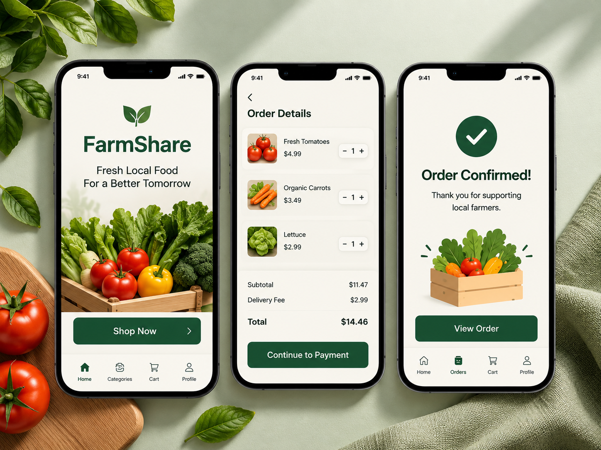
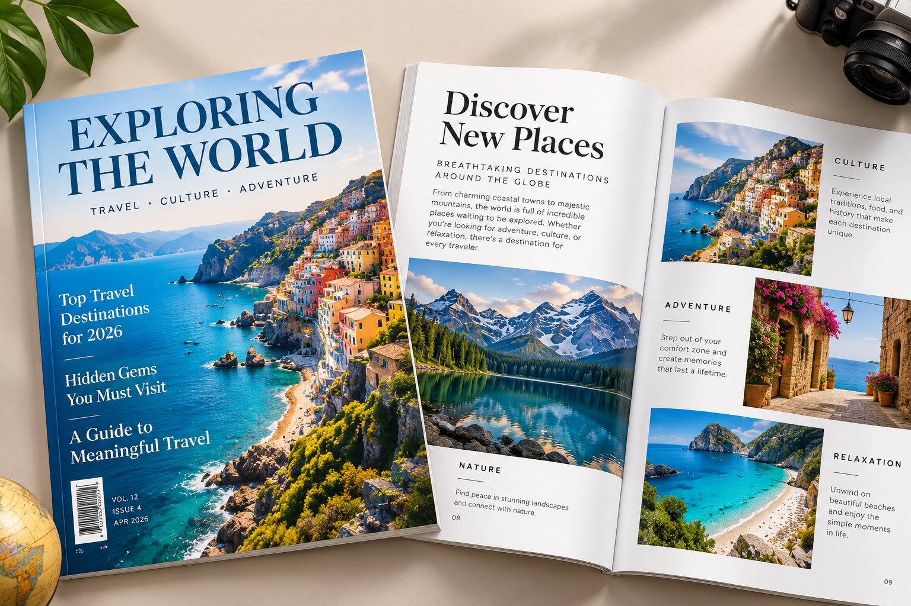

Typography Monogram
A typography project created in Adobe Illustrator using my name and a single typeface. The project explored letterforms, composition, and black-and-white design.
A typography project created in Adobe Illustrator using my name and a single typeface. The project explored letterforms, composition, and black-and-white design.

A UI/UX design project created in Figma. FarmShare is a concept that connects customers with local food. The project included a landing page, ordering screens, and an order confirmation screen.
A photography project exploring composition, lighting, and visual storytelling. I used a Nikon D5600 camera and Adobe Lightroom Classic to edit and organize my photographs.

A magazine design project focused on travel and visual storytelling. I created a magazine cover and interior pages using typography, photography, layout, and visual hierarchy.
This is placeholder content for an animation project that will be completed in Unit 3.
This is placeholder content for an animation project that will be completed in Unit 3.